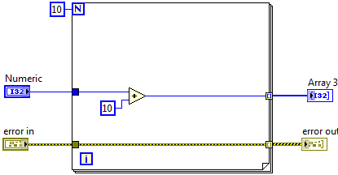

Users can encounter errors in even the most reliable VIs. Without a mechanism to check for errors, you can only know that a VI does not work properly. Error checking identifies why and where errors occur in your VI.
For example, one common situation in which you can encounter errors occurs when you perform any kind of input and output (I/O). Almost all I/O functions return error information. Include error checking in VIs, especially for I/O operations (file, serial, instrumentation, data acquisition, and communication), and provide a mechanism to handle errors effectively.
By default, LabVIEW automatically handles any error when a VI runs by suspending execution, highlighting the subVI or function where the error occurred, and displaying an error dialog box.
|
Note��The LabVIEW Run-Time Engine does not support automatic error handling. |
You also can disable automatic error handling in preference of other error handling methods. For example, if an I/O VI on the block diagram times out, you may want the VI to retry for a certain period of time instead of allowing automatic error handling to stop the application and display an error dialog box. You can implement custom error handling on the block diagram of the VI.
Refer to the following table for information about how to disable automatic error handling for different types of VIs.
| Type of VI | Disabling Automatic Error Handling |
|---|---|
| Current VI | Select File�VI Properties. Then select Execution from the Category pull-down menu and remove the checkmark from the Enable automatic error handling checkbox. |
| New, blank VIs | Select Tools�Options. Then select Block Diagram from the Category list and remove the checkmark from the Enable automatic error handling in new VIs checkbox. |
| SubVI or function within a VI | Create an error out indicator in the subVI or wire the error out parameter of that subVI to the error in input of another subVI or function. |
Error handling in LabVIEW follows the dataflow model, similar to how data values flow through a VI. Wire the error information from the beginning of the VI to the end. Include an error handler VI at the end of the VI to determine if the VI ran without errors. Use the error in and error out clusters in each VI to pass the error information through the VI. Error clusters typically provide the same standard error in and standard error out functionality. The error clusters are flow-through parameters.
For example, the following image displays a VI with standard error cluster.

As the VI runs, LabVIEW tests for errors at each execution node. If LabVIEW does not find any errors, the node executes normally. If LabVIEW detects an error, the node passes the error to the next node without executing that part of the code. The next node does the same thing, and so on. At the end of the execution flow, LabVIEW reports the error.
Refer to the following table for information about the elements of an error in and error out cluster.
| Cluster Element Name | Cluster Element Description |
|---|---|
| status | A Boolean value that reports TRUE if an error occurred |
| code | A 32-bit signed integer that identifies the error numerically. A nonzero error code coupled with a status of FALSE signals a warning rather than an error |
| source | A string that identifies where the error occurred |
|
Note��Some VIs, functions, and structures that accept Boolean data also recognize an error cluster. For example, you can wire an error cluster to a Boolean function or to the Boolean inputs of the Select, Quit LabVIEW, or Stop functions to handle errors using logical operations. |
You can develop and implement your own error handling in LabVIEW. Use the LabVIEW error handling VIs and functions on the Dialog & User Interface palette and the error in and error out parameters of most VIs and functions to manage errors. For example, if LabVIEW encounters an error, you can display the error message in different kinds of dialog boxes.
The VIs and functions native to LabVIEW return errors in one of two ways�with numeric error codes or with an error cluster. Typically, functions use numeric error codes, and VIs use an error cluster, usually with error inputs and outputs.
You can use debugging tools in conjunction with error handling to help identify and manage errors.
You also can refer to the following table for examples of common methods for using error clusters.
| Method | Description |
|---|---|
| Stopping a loop with an error cluster | To stop the iteration of a loop, you can wire an error cluster to either the conditional terminal of a While Loop or to a For Loop with a conditional terminal. If you wire an error cluster to a conditional terminal, only the TRUE or FALSE value of the status parameter of the error cluster passes to the terminal. If an error occurs, the loop stops. Also, the shortcut menu items Stop if True and Continue if True change to Stop on Error and Continue while Error. In a For Loop with a conditional terminal, you also must wire a value to the count terminal or auto-index an input array to set a maximum number of iterations. The For Loop executes until an error occurs or until the number of set iterations completes. |
| Executing code conditionally according to error status | When you wire an error cluster to the selector terminal of a Case structure, the case selector label displays two cases: Error and No Error. If an error occurs, the Case structure executes the Error subdiagram. To create a new VI with a Case structure for error handling, use the SubVI with Error Handling template VI. The border of the Case structure also changes color, red for Error and green for No Error. |